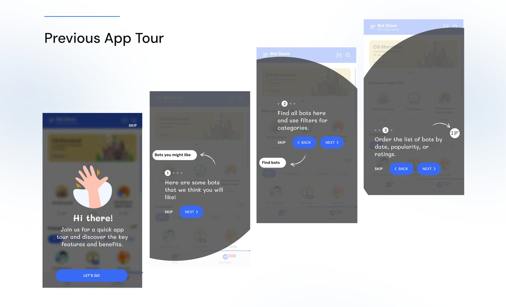

Before · App tour
A tour points at things. It doesn’t give a reason.
The previous onboarding walked users through the Bot Store in four steps: bots you might like, finding bots, filters and sorting. Useful, but it asked nothing of them.
four screens, zero reasons to chat